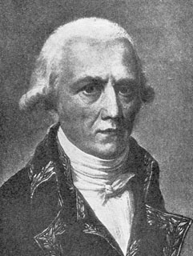
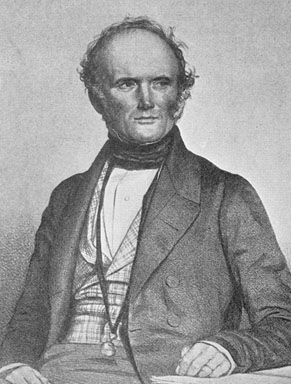
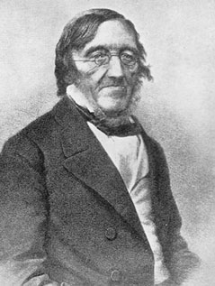
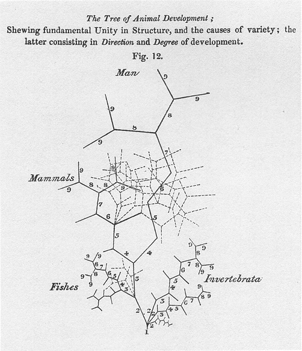
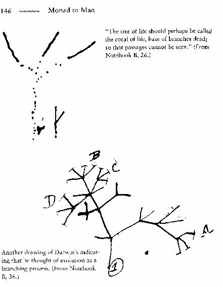
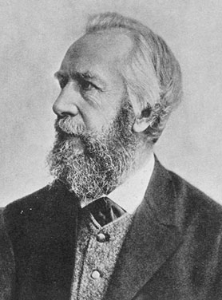

Darwins Vorgänger und Einflüsse
1. Transmutationismus
von John Wilkins
Zurück |
Inhalt |
Weiter |
Die Ansicht, dass sich Arten verändern, ist alt, aber in der wissenschaftlichen Tradition leitet sie sich von Lamarck ab, der sie zu einer mehr oder weniger respektablen Ansicht machte. Zahlreiche frühere Autoren, darunter Linnaeus, Maupertuis, Buffon und sogar Aristoteles, hatten vorgeschlagen, dass einige Arten neue Arten hervorbringen könnten, dies stand jedoch im Widerspruch zur kirchlichen Lehre und war in christlichem Europa eine gefährliche Ansicht. Es gab Hinweise auf die Umwandlung von Arten bei den antiken griechischen Schriftstellern, doch ihre Ansichten neigten dazu, die Vererbung zu ignorieren, und zählen daher nicht als wahrhaft evolutionär.1
Jean Baptiste de Lamarck 
Ende des 18. Jahrhunderts hatte Cuvier in Frankreich ausgestorbene Säugetiere beschrieben und Blumenbach in Deutschland ausgestorbene fossile Muscheln. Im Jahr 1800 übernahm Lamarck die neuplatonische Sichtweise von Bonnet von einer allmählichen Reihe oder Skala von unbelebter Materie bis zum vollkommensten Wesen und fügte ein Prinzip des Übergangs über die Zeit hinzu. Darüber hinaus fügte Lamarck hinzu, dass der Übergang kein Ladder, sondern ein verzweigter Baum sei, bei dem neue Formen entstehen. Allerdings behauptete Lamarck die Existenz einer Anzahl qualitativ getrennter Bäume für verschiedene Abstammungslinien – mehrere für Tiere und mehrere für Pflanzen und andere Lebensformen – anstatt eines gemeinsamen Baumes für alle Lebewesen. Lamarck akzeptierte die damals weit verbreitete Ansicht der Möglichkeit der spontanen Entstehung neuer lebender Formen aus unbelebter Materie, was später von Pasteur im späten 19. Jahrhundert widerlegt wurde. (Pasteurs „Widerlegung" der spontanen Generierung zeigte eigentlich nur, dass moderne Organismen wie Bakterien nicht aus dem Nichts entstanden, nicht dass Leben immer von Leben kommen muss, wie es manchmal von Anti-Evolutionisten behauptet wird. Ebenso zeigten Spallanzinis Experimente des 17. Jahrhunderts mit Fliegen und Mäusen dasselbe.)
Lamarck ging davon aus, dass es zwei Ursachen für evolutionäre Veränderungen gab: einen Drang zur Vollkommenheit und die Fähigkeit von Organismen, auf die Umwelt zu reagieren und sich an die Bedürfnisse der gegenwärtigen Situation anzupassen. Mayr sagt, dass Lamarck weder Vitalist noch Teleologe war, was bedeutet, dass er weder annahm, dass Leben eine mysteriöse nicht-physikalische Kraft sei, noch dass es ein Ziel oder eine Richtung habe, im Gegensatz zu späteren weit verbreiteten Missverständnissen. Stattdessen sah er die Umwelt als die treibende Kraft der Evolution (im Gegensatz zu Darwin, der annahm, dass die Umwelt die Endresultate natürlicher Variation aussortiert). Lamarck ging auch davon aus, dass Organe durch Gebrauch gestärkt und durch Nichtgebrauch geschwächt wurden, wie sie vererbt wurden (eine Ansicht, die auch Darwin teilte).
Lamarck wurde im Lichte späterer Entwicklungen missverstanden, als habe er geglaubt, dass Veränderungen aus den Absichten oder Willensentschlüssen von Organismen resultierten. Darwins Zeitgenosse Spencer und Darwin selbst hielten dies für Lamarck (sie waren sich uneinig über seine Richtigkeit), und diejenigen, die im späten 19. Jahrhundert als „Neo-Lamarckianer" bezeichnet wurden, vertraten ebenfalls diese Ansicht und zuschrieben sie Lamarck. Mayr2 argumentiert, dies sei auf eine Fehlübersetzung des Wortes besoin als „Wunsch" statt als „Bedürfnis" zurückzuführen. Viele der Missverständnisse bezüglich Lamarcks Ansichten waren auf Lyells Diskussion in seinem Principles of Geology, Band 2, zurückzuführen.
Lamarcks Ansichten schlugen in seiner Heimat Frankreich schlecht an. Der große Anatom Cuvier verspottete seine Ansichten und förderte stattdessen die Vorstellung katastrophaler Veränderungen gefolgt von Akten der spontanen Generierung, was spätere französische Biologen beeinflusste. Cuvier lehnte die Evolution nicht aus religiösen Gründen ab, obwohl diese Vorwürfe oft gemacht werden, sondern aus damals relativ guten evidentiären Gründen: Es gab keine offensichtliche Zunahme der Vollkommenheit, die im Fossilbericht gezeigt wurde. Da Lamarck annahm, dass es einen Antrieb zur Vollkommenheit gebe, sollte der Fossilbericht dies zeigen. Cuvier war auch dem herrschenden Essentialismus verpflichtet (die Ansicht, dass Arten Wesenheiten hatten, die sich nicht änderten). Nur Geoffroy in Frankreich folgte dem evolutionären Weg, und sein überambitionierter Versuch, ein vergleichbares System von Formen zu entwerfen, das auf das gesamte Tierreich anwendbar war, kostete ihn Unterstützung.
Darwin war Lamarck indirekt zu Dank verpflichtet. Lamarks Ansichten wurden 1844 vom schottischen Amateurautor Robert Chambers (Verleger von Chambers' Cyclopaedia) erneut beleuchtet in einem anonym veröffentlichten Buch: Vestiges of the Natural History of Creation. Dieses Buch verursachte in England einen großen Aufschrei, teilweise aufgrund der sozialen Umwälzungen der Zeit, da der Evolutionismus mit Forderungen nach radikalen sozialen Reformen in Verbindung gebracht wurde und als gefährliche Ansicht galt. Chambers' Werk war eindeutig amateurhaft, und die Geologen seiner Zeit machten sich über viele seiner Behauptungen lustig (die Biologie als solche existierte damals noch nicht als eigenständige Wissenschaft, obwohl der Begriff Ende des 18. Jahrhunderts geprägt und von Lamarck populär gemacht worden war). Darwin las das Vestiges genau und entschied sich, nicht in derselben Weise von der wissenschaftlichen Gemeinschaft zerlegt zu werden, was teilweise erklärt, warum es ihm 20 Jahre nach seinen ersten Inspirationen 1837/38 dauerte, seine Ansichten zu veröffentlichen. Chambers war dem Quintersystem von William Macleay verpflichtet, das das Leben in fünf ideale Klassen unterteilte, und innerhalb derer allein die Evolution stattfand. Er befürchtete, dass Lamarks Ansatz zu Unregelmäßigkeiten in der Struktur des Lebens führen würde3. Obwohl Chambers Lamarck herabsetzte, waren seine Ansichten nicht sehr unterschiedlich, und in späteren Auflagen schloss er sogar einen Mechanismus ein, der Lamarks nicht unähnlich war, sobald er Macleays System aufgegeben hatte.
Charles Lyell (rechts) 
Darüber hinaus veröffentlichte Charles Lyell im Jahr 1832 den zweiten Band seines einflussreichen Werkes Principles of Geology, das Darwin während seiner Reise mit der Beagle im selben Jahr erhielt. Ein Großteil des Werkes widmete sich der Kritik an Lamarcks Ansichten unter Verwendung von Cuviers Argumenten. Schließlich und wie von Darwin selbst zugegeben, war sein guter Freund an der Universität Edinburgh, wo er Medizin studierte, Robert Grant einer der wenigen begeisterten Anhänger des Lamarckismus in Großbritannien und erläuterte es Darwin wiederholt. Darwin bemerkte in seiner Autobiography, dass er möglicherweise durch das Anhören von Lammars Loben zur Evolution prädisponiert worden sein könnte4.
Was Darwin von Lamarck bezüglich der Evolution gewann, war eine Sichtweise der verzweigten Veränderung, obwohl es wahrscheinlich ist, dass er zu diesen Ansichten auf eigene Faust kam, zunächst durch seine Feldbeobachtungen während der Reise des Beagle und nachfolgende Überlegungen. Lamarck hatte ein Klima geschaffen, in dem solche Sichtweisen möglich waren. Im Jahr 1802 veröffentlichte William Paley sein Natural Theology, das ein ausgedehntes Argument für die Existenz und Aktivität Gottes aus dem Beleg des Designs in der natürlichen Welt darstellte, und ähnliche Ansichten wurden in den Bridgewater Treatises (1833-1836) von einer Reihe von Theologen und Wissenschaftlern vertreten. Aber die Katze war aus dem Sack, und die Wissenschaft wurde zunehmend autonom von theologischen Einschränkungen, hin zu mehr naturalistischen Erklärungen. Lamarcks eigene Erklärungen waren eindeutig unzureichend, aber die Notwendigkeit, Anpassung zu erklären, wurde weitgehend von Lamarck geschaffen. Als Reaktion auf die Behauptung, er habe lediglich Lamarcks Lehre wiederholt, erklärte Darwin, dass er von Lamarcks Arbeit weder einen Fakt noch eine Idee gewonnen habe5.
Der Großvater von Darwin selbst, Erasmus Darwin, verfasste ein umfangreiches Buch, das eine transmutationistische Sichtweise darlegte, und es ist bekannt, dass Darwin dies als Teenager gelesen hatte6. Doch als er mit seinen naturkundlichen Forschungen begann, war Darwin ein fester Gläubiger in die statische Natur der Arten, und Erasmus hatte wenig Einfluss auf die folgenden biologischen Forschungen. Unabhängig von Erasmus direktem Einfluss schrieb Charles, dass er die Idee der Artenverwandlung erstmals traf, als er die Werke seines Großvaters las7.
Ein weiterer wichtiger Wissenschaftler, der die Veränderung lieber in Bezug auf Kräfte erklärte, die gegenwärtig wirken, war Charles Lyell, dessen Ansichten über schrittweise geologische Veränderungen 1832 vom Philosophen William Whewell als „Uniformitarismus" bezeichnet wurden, im Gegensatz zu Cuviers, den Whewell als „Katastrophismus" bezeichnete. Im Laufe des Jahrhunderts näherten sich diese Ansichten immer mehr aneinander an, bis kaum noch etwas sie unterschied, doch zunächst war die Debatte hitzig.
Da die Geologie damals das, was wir heute Paläontologie nennen, also die Erforschung von Fossilien, umfasste, äußerte sich Lyell viel über biologische Veränderungen über die Zeitskalen der Geologie hinweg und schwankte über die meisten seiner Karrierejahre zwischen der Idee der Verwandlung, obwohl er erst mit der Veröffentlichung des Origin endgültig zustimmte. Darwins Ansichten wurden direkt von Lyell beeinflusst (Darwin nahm eine Kopie von Band 1 von Lyells Principles of Geology mit auf die Beagle-Reise und erhielt Band 2 en route), obwohl Lyell zu dieser Zeit, wie Mayr es ausdrückte8, "ein Essentialist, ein Kreationist und sein gesamter konzeptueller Rahmen stand diametral im Widerspruch zu Darwins". Lyell und Darwin waren gute Freunde und Darwin strebte danach, Lyells Zustimmung zu gewinnen.
Herbert Spencer, ein Eisenbahningenieur, der eine eher turgide „synthetische" Philosophie verfasste, rief die Evolution als universelles Prinzip in Auftrag, einige Jahre bevor Darwin das Origin veröffentlichte. Spencers Evolution war ein Prinzip der notwendigen Differenzierung und des Fortschritts vom weniger zum komplexeren. Mayr sagt: „Spencers Ansichten trugen nichts Positives zu Darwins Denken bei; im Gegenteil, sie wurden zu einer Quelle beträchtlicher späterer Verwirrung"9. Spencer spendete den Ausdruck „Survival of the fittest" nach Wallace Darwin davon überzeugt hatte, dass die Implikationen von absichtlicher und absichtlicher Selektion im Begriff „natürliche Selektion" irreführend waren, wie es tatsächlich für Darwins Zeitgenossen der Fall war10. Spencer wurde von Darwin und Huxley privat und manchmal öffentlich wegen des Mangels an echten Fakten in seiner Naturphilosophie verspottet. Huxley sagte einmal, dass Spencers Idee einer Tragödie eine Deduktion sei, die durch eine Tatsache verdorben wurde.
Spencers Ansichten beeinflussten Denker bis in die Gegenwart, insbesondere Karl Popper (1972). Sie ähnelten am ehesten den populär verbreiteten Ansichten zur Evolution, die von Lamarck und der deutschen Tradition der Naturphilosophie überliefert wurden und den Glauben an eine progressive Entwicklung durch Stufen zu größerer Komplexität beinhalteten, Ansichten, die von Darwin abgelehnt wurden, aber in der darauffolgenden „Revolution" nach 185911 einflussreich waren.
Schließlich ist ein Hinweis auf den Einfluss der Rekapitulationstheorie geboten. Diese Sichtweise wurde am bekanntesten von dem früheren embryologischen Gedanken von von Baer (1828; siehe Richards 1992 für Beispiele anderer möglicher Urheber dieser Sichtweise, einschließlich Friedrich Tiedemann) von Ernst Haeckel weiterentwickelt, der sich als Sprecher für den "Darwinismus" in Deutschland etablierte. Haeckels Version schlug vor, dass Embryonen die "Stadien" der "niedrigeren" Tiere der betroffenen Klasse durchlaufen (von Baer hatte lediglich festgestellt, dass Veränderungen, die von einer kleineren Gruppe miteinander verwandter Organismen geteilt werden, später in der Entwicklung auftreten als Veränderungen, die von breiteren Gruppen geteilt werden; so würde sich zum Beispiel die Entwicklung von Haaren früher als die Entwicklung von Plazentagewebe vollziehen). Es gibt zwei offensichtliche Möglichkeiten, dies zu interpretieren: Entweder durchlaufen Embryonen rekapitulieren (durchlaufen) die gleichen Stadien einer Hierarchie von (ewigen oder idealen) Typen, die jedoch weniger historische Stadien als vielmehr Grade von "Vollkommenheit" oder "Komplexität" sind, während die historische Sichtweise besagt, dass diese Ähnlichkeiten der Embryonen auf erhaltene Stadien aus tatsächlichen Vorfahren zurückzuführen sind (d. h. aus der Phylogenie, oder der Abstammungsreihe, des Organismus).

Karl Ernst von Baer (links)Von Baer zeigte, dass Embryonen von Arten, die ähnlich waren, ähnliche Stadien durchliefen, und diese Arbeit ist nicht ganz widerlegt, obwohl sie im Lichte späterer Forschung stark modifiziert wurde12. Die moderne Sichtweise ist, dass Embryonen tendenziell embryologische (d. h. nicht erwachsene) Merkmale der Vorfahren beibehalten und ihre Bedeutung für die Evolution stark reduziert ist, da sie nun durch gemeinsame Abstammung und natürliche Selektion erklärt werden, anstatt Beweise für diese Theorien zu liefern. Da jedoch Selektion auch in utero wirken kann (beispielsweise in Bezug auf Krankheitsresistenz), erwartet die moderne evolutionäre Theorie nicht, dass alle Merkmale beibehalten werden. Haeckels Traum, dass wir den urtümlichen Vorfahren einer Gruppe verwandter Organismen aus den frühen Embryonen dieser Organismen rekonstruieren könnten, ist nun völlig widerlegt – tatsächlich wurde er bereits in seiner eigenen Zeit angezweifelt, obwohl er in die Lehrbücher Eingang fand.
 |
Links: Eine schematische Darstellung der Theorie von von Baer, wonach je häufiger ein Entwicklungsmerkmal bei einer Tiergruppe vorkommt, desto früher tritt es im Entwicklungsverlauf auf. Vergleichen Sie dies mit Darwins ersten Skizzen des evolutionären Baums. Aus Richards 1992. |
 |
Darwins Skizzenaus demselben Jahr (aus Ruse 1996) |
Die nach Origin in Europa und Nordamerika verbreitete Evolution basierte auf der Analogie zwischen der Entwicklung und dem Lebenszyklus eines einzelnen Organismus ("Ontogenese") und dem einer Art ("Phylogenie"). Diese populäre Ansicht, die sich im Gegensatz zu Darwins13 stand, ging davon aus, dass Arten einen "Lebenszyklus" hätten und dass jede Art oder jede Artlinie in den Stufen, die sie durchlaufen würde, vorbestimmt sei. Bowler (1982, 1988) argumentiert, dass diese Ansichten die vor-darwinistischen Versionen der Evolution widerspiegelten, nicht die darwinistischen (vgl. auch Gould 1977, Hull 1973, Mayr 1982). Ich denke, Richards 1992 These, die zwar einige Interpretationsüberschwänge korrigiert, aber nicht den Fall beweist, dass Darwin in diesem Sinne ein Progressionist war, und ebenso Ruse 1996, obwohl er einen guten Fall für Darwins spätere Schriften macht.
Ernst Haeckel (rechts) 
Insbesondere Ernst Haeckels post-Origin-Ansichten (das berühmte und nun widerlegte „biogenetische Gesetz", wonach „Ontogenie die Phylogenie recapituliert" oder dass die embryonale Entwicklung eine Recapitulation der adulten Stufen der Vorfahren darstellte) basierten auf dieser Analogie zwischen Organismus und Art, obwohl er behauptete, in Darwins Schule zu stehen, und eine Erweiterung der Arbeit von von Baer waren (der selbst auch nach der Veröffentlichung des Origin dem Transmutationismus ablehnend gegenüberstand).
Darwin hatte die späteren Arbeiten der Embryologen Meckel und Serres sowie einen umfangreichen Übersichtsartikel über die Arbeit von von Baer14 gelesen, doch alle hielten an einer scala naturae-Sichtweise der Arten fest (dass sie auf einer vorbestimmten Leiter oder Skala15 rangiert waren). Haeckels so genannte „biogenetische Grundregel" war niemals Teil von Darwins Theorie, obwohl er und Darwin auf gutem Fuß standen16.
1 vgl. Magner 1994, Kapitel 8, für eine Übersicht über diese frühen Evolutionisten und Mayr 1982, Kapitel 7, zum Urteil, dass die antiken Griechen keine evolutionäre Theorie beigesteuert haben.
2 Mayr 1982, Kapitel 8
3 Ruse 1979, S. 104–106
4 Darwin 1959, S. 49
5 Brief an Lyell aus dem Jahr 1859, Darwin 1959, S. 153
6 Darwin 1959, S. 49
7 Richards 1992, vgl. auch seinen Artikel in Keller und Lloyd 1992
8 Mayr 1982, S. 381
9 Mayr 1982, S. 386
10 de Beer 1963, S. 178f
11 Siehe Bowler 1988 für eine gute Übersicht über die Verbreitung von „Pseudo-Darwinismus", und 1982 sowie 1989 für Details zu pseudo- und anti-darwinistischen Ansichten nach Darwin, und Hull 1973, Einleitung.
12 Gould 1977 bietet die klassische Diskussion, vgl. Mayr 1982, S. 472–473, Richards 1992
13 Siehe Richards 1992 für Abweichung von dieser traditionellen Interpretation.
15 Vgl. Mayr 1982, S. 476ff
16 Mayr 1982, S. 474–475; jedoch siehe Richards 1992
Zurück |
Inhalt |
Weiter |
| Die FAQ | Lesenswerte Dateien | Index | Kreationismus | Evolution | Alter der Erde | Flutgeologie | Katastrophismus | Debatten |